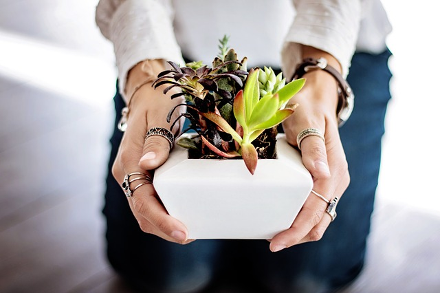

Nearly all cacti are succulents but not all succulents are cacti.
Continue reading


OK, so you just returned from the store with your first cactus plant.
Continue reading
Selecting a pot or planter for succulents is often overlooked but it’s important.
Continue reading